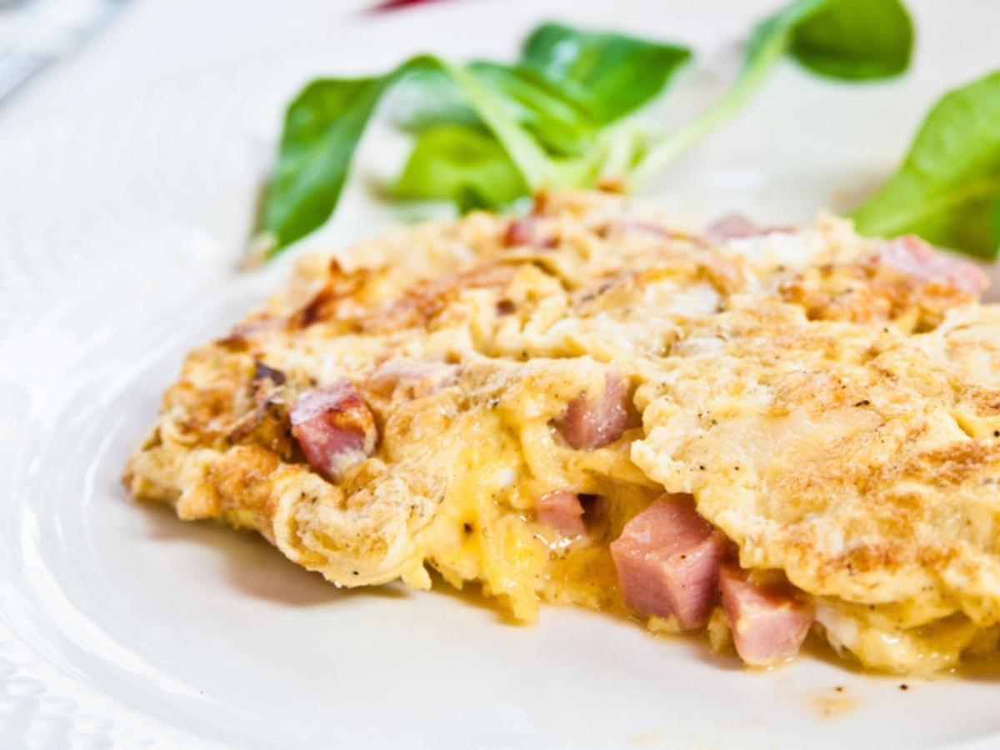

Onion and Turkey Sausage Omellete

Description
This is going to be a simple, macro friendly omellette that anyone can make.
Ingredients
- 2 eggs
- 1 cup egg whites
- 1 cup diced onions
- 3 turkey sausage links
- Sugar free ketchup
Steps
- Cook the onions until light brown.
- While the onions are cooking, get a bowl and mix the two eggs and egg whites together.
- When the onions are fully cooked, pour in the eggs and cook until ready. While that is happening, microwave the turkey sausage links for one minute.
- Place both onto a large plate and put on a light drizzle of sugar-free ketchup.
- Enjoy!